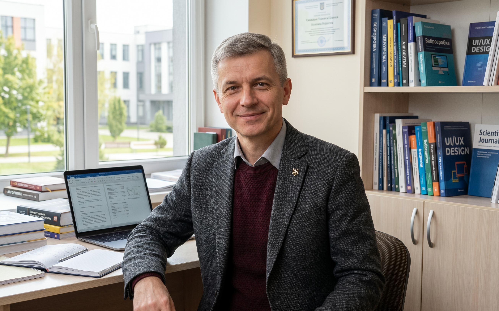

Про викладача:
Науково-педагогічний стаж понад 10 років. Сфера наукових інтересів: проєктування програмних систем, вебтехнології, алгоритми штучного інтелекту та моделювання бізнес-процесів.
Закінчив Національний технічний університет, здобув ступінь кандидата технічних наук за спеціальністю «Інформаційні технології». Автор понад 20 наукових та навчально-методичних праць, учасник міжнародних конференцій з програмної інженерії та вебтехнологій.
Керує курсовими та дипломними роботами студентів, бере участь у розробленні навчальних програм кафедри. Практичний досвід включає участь у комерційних проєктах із розроблення вебзастосунків, тому на заняттях поєднує теорію з реальними прикладами з індустрії.
Особливу увагу приділяє формуванню в студентів навичок командної роботи, написання чистого коду та презентації результатів власних проєктів.
Навчальні дисципліни:
Веброзробка та дизайн інтерфейсів
Веброзробка та дизайн інтерфейсів
Вивчення стандартів семантичної верстки HTML5 та сучасної стилізації CSS3 (Flexbox, Grid), створення прототипів у Figma, проєктування адаптивних вебсторінок та базова робота з клієнтським JavaScript.
Об'єктно-орієнтоване програмування
Об'єктно-орієнтоване програмування
Принципи ООП: інкапсуляція, успадкування, поліморфізм. Проєктування класів та інтерфейсів, робота з патернами проєктування, написання програм мовою Java.
Архітектура та тестування програмного забезпечення
Архітектура та тестування програмного забезпечення
Архітектурні стилі та шаблони, розроблення технічної документації, модульне та інтеграційне тестування, автоматизація перевірок якості програмного коду.
Розклад консультацій та пар:
- Понеділок 10:00 – 11:35 • Лекція, ауд. 312
- Середа 12:00 – 13:35 • Лабораторні роботи, комп. клас 4
- П'ятниця 14:00 – 15:30 • Консультації для студентів